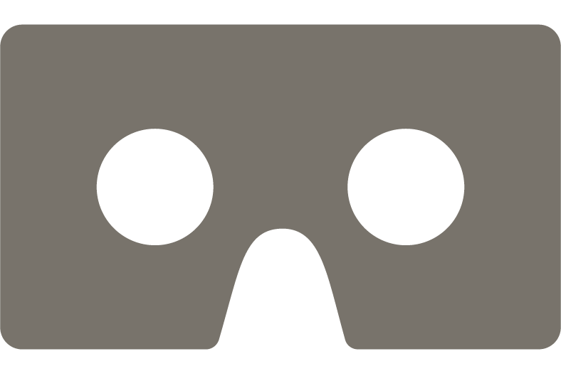

To explore slide your finger on the screen
or tilt your mobile device. Hover the circular cursor over items to select them. You can click this icon

to change the viewing experience for virtual reality.
To explore click the screen and use the circular cursor to hover over objects and select them.
To release your cursor press escape. You can also click this icon
to change the viewing experience for virtual reality.